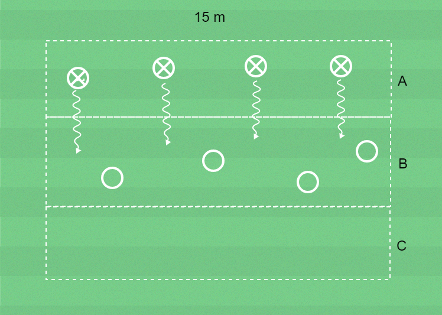

 ▶
▶
Förhindra speluppbyggnad
Hindra motståndarna från att göra mål.
Frågeexempel
Hur gör du så att du kan ta bollen från motspelaren?
Jag försöker komma så nära som möjligt.
Hur gör du för att styra motspelaren i en viss riktning?
Jag rör mig mot den fot där motspelaren har bollen.
8 barn, yta 15 x 15 meter, bollar, koner och västar.
Dela in barnen i 2 lag med 4 i varje och ytan i tre zoner: A, B och C. Alla i blått lag hämtar var sin boll i zon A och driver in bollarna i zon B. Rött lag ska erövra bollarna i zon B och driva in dem i zon C.
Blått lag hämtar nya bollar och driver in dem i zon B.
Det är inte tillåtet att passa bollarna.
Hur lång tid tar det för rött lag att erövra alla bollarna?
Byt uppgifter.